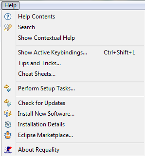
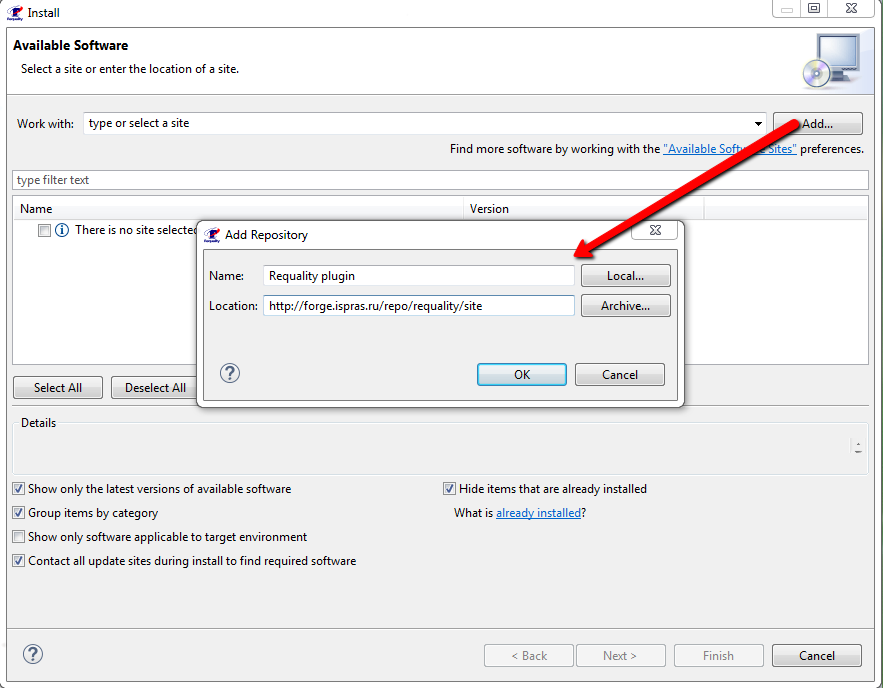
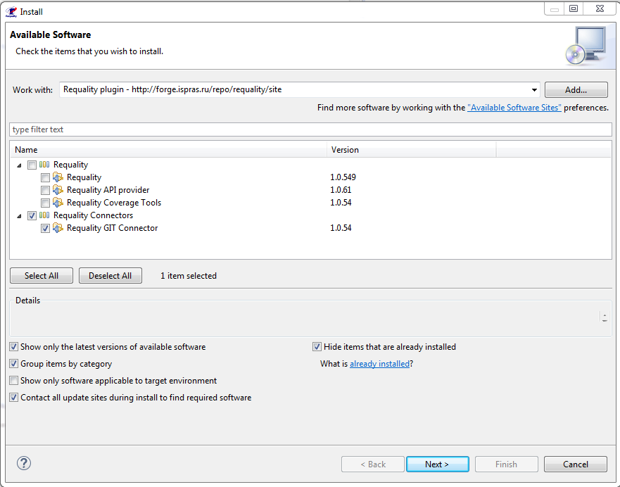
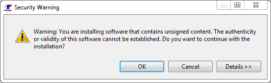
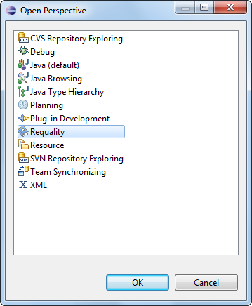
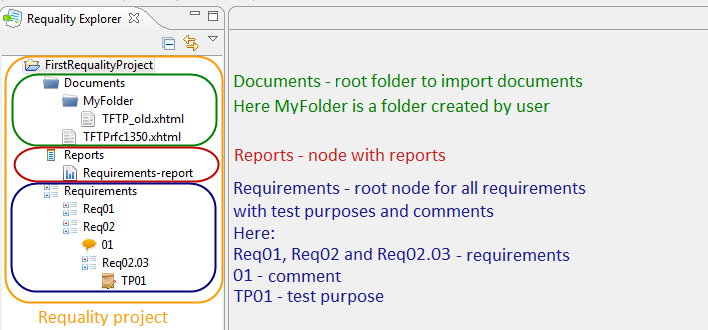
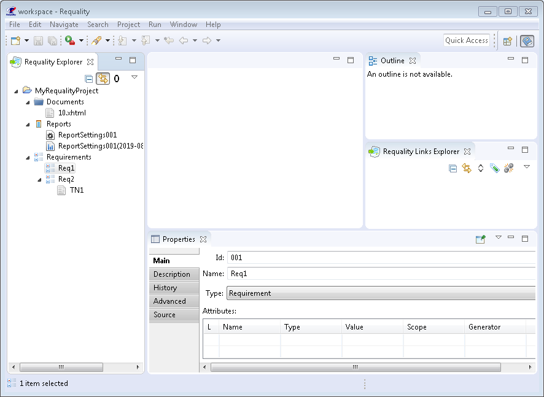

Requality is a tool to manage requirements primarily to software. It allows:
Multiuser revision control for documents and requirements is supported. You can use any revision control system, e.g. Git.
The tool is implemented as an Eclipse plugin. It could be used in IDE based on this platform, and independently.
Requality home page, Requality official website
Software Engineering Department, Ivannikov Institute for System Programming of the RAS
E-mail: requality@ispras.ru
Windows or Linux. x86 and x86-64 architectures are supported.
For Windows you have to install:
Also for correct work in Requality in Windows it is necessary to install components:
By default, for Windows 10 the number of simultaneously opened editors (tabs) in Requality is limited - no more than 8. To remove this limitation, you need to install the registry fix.
| Dependencies for Windows | ||
|---|---|---|
| Dependency | Recommended version | x86, x86-64 |
| OpenJDK8 HotSpot (1.3 and earlier) | 8.0 | x86 |
| OpenJDK17 HotSpot (1.4 and later) | 17.0 | x64 |
For Linux you have to install OpenJDK and libxt6. Following dependencies are required for Ubuntu 14 x86, x86-64. For other Linux systems additional packages could be required.
| Dependencies for Linux | |||
|---|---|---|---|
| Dependency | Recommended version | x86, x86-64 | package name |
| OpenJDK (1.3 and earlier) | 8.0 | i386 | openjdk-8-jre:i386 |
| OpenJDK (1.4 and later) | 17.0 | x64 | openjdk-17-jre |
| libxt6 (only for 32-bit version on 64-bit systems) | libxt6:i386 | ||
Packages could be installed using "apt-get install <package_name>" command in command line for Debian-like systems.
Requality can be installed from a bundle. For 64-bit systems and tool version 1.3 and below use 32-bit version of Java and all libraries.
Latest stable bundle can be downloaded from official site.
When the download is complete unpack the archive to any convenient place on the disk. After that Requality will be available for work.
Please note! If using 64-bit systems you have to specify a path to 32-bit Java in 'requality.ini' before the "-vmargs" line as shown:
"-vm
<path-to-32bit-java>"
For example, <path-to-32bit-java> can look like:
for Ubuntu:
"/usr/lib/jvm/open-jdk-7-jre/jre/bin"
or for Windows:
"C:\Program Files (x86)\Java\jre1.8.0_45\bin"
For Requality a number of plugins have been developed that provide additional features. These plugins can be installed by update-site to Eclipse with Requality using update-site.
The following describes the plugins installation process and a list of available plugins with a description of their capabilities and the update-site addresses.
To install plugin you need to know the address of update-site. Next in the list of plugins for each plugin there is its update-site.
Plugin installation instructions:




You can read more about plugins installation here.
Please note that links below are designed only for plugin installation in eclipse.
Requality Coverage Tools is required to create various coverage reports (see Report 'Requirements coverage analysis' ('Анализ покрытия требований'), Report 'Document model' ('Анализ покрытия выделенных требований'), Report 'Progress' ('Прогресс по проекту') sections).
Requality Coverage Tools update-site: https://forge.ispras.ru/repo/requality/site
Requality GIT Connector is required to work with GIT through the internal Requality interface for GIT. This plugin is also needed, for example, when creating reports using the 'Progress' template (see Report 'Progress' ('Прогресс по проекту') section), if you use GIT for version control.
Requality GIT Connector update-site: https://forge.ispras.ru/repo/requality/site
Requality API provider update-site: https://forge.ispras.ru/repo/requality/site
To open Requality perspective choose in main menu 'Window' → 'Open Perspective' → 'Other...'.
In the opened window choose Requality (see the picture) and push 'OK'.

If you create 'Requality' project 'Requality'-perspective opens itself.
Following views are opened in 'Requality' perspective by default:
Requality Explorer – contains a documents tree, tree of requirements, test purposes and comments, reports tree. 'Requality Explorer' is similar to 'Package explorer', but you can open only 'Requality' projects in it. 'Requality' project contains following components:

Properties – view to edit properties of requirements, test purposes, reports, documents. Properties view has some tabs. The number and contents of tabs depends on type of component. Note that you can open several Properties views at the same time. To do this select in the view menu 'New Properties View' item. To fix properties of some special component in Properties view, select 'Pin to Selection' in the view menu or push an appropriate button in the view. Now the content of the view is not being changed even if you switch between other components.
Outline – shows a list of locations marked in current document. Current document is a document that is opened in 'Markup Editor' and is in a focus. At other times this view is empty.
Requality Links Explorer – view that displays links between nodes. If you select one of the nodes of the requirements tree in the 'Requality Explorer', the 'Requality Links Explorer' displays the nodes that are linked to the selected node by various types of link relations.
